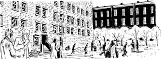
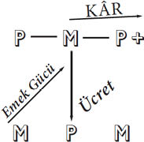
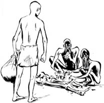
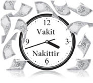

Bölüm 3
DOLAŞIM VE EMEK GÜCÜNÜN SATIN ALINMASI
Ama o kadar çabuk değil! Üretimin yapıldığı gizli işyerine girmeden önce dolaşım alanına, yani değerin ekonomide dolaşmasını sağlayan mübadeleler dizisine, biraz daha bakmalıyız.
Dolaşım alanının üretim alanıyla bağlantılı olduğunu görürüz. Ek olarak iki farklı türde dolaşımın işlediğini de görürüz. Bunlar da bağlantılıdır ama çok farklı toplumsal çıkarları temsil ederler. Dolaşımla ilgili öğrendiklerimizi “gizli işyerine” yanımızda götürmeliyiz çünkü sermayenin nasıl dolaştığı üretim sürecini de belirleyecektir. Ayrıca dolaşım alanı ile mübadelenin bize olgusal biçimde nasıl göründüğü ile gerçekte nasıl olduğunu birbirinden ayırmalıyız.
Alıcımız paltoyu almak için parayı nereden buldu? Alıcımız satın almak için ne sattı? Yanıtın, Alıcımız emek gücünü piyasada sattı, olduğu açıktır; bir başka deyişle, Alıcımız çalıştı. Kapitalist toplumda çoğu insan, yaşayabilmek için bu mübadeleyi yapmak zorundadır. Alıcımız emek gücünü para ile değiştirir, o parayla da palto alır. Bu mübadele döngüsü şöyledir:
M – P – M
M = Meta (emek gücü)
P = Para
M = Başka Bir Meta (sözgelimi palto)
M – P – M döngüsü, bir metanın bulunduğu uçtan başlar ve dolaşımdan çıkıp tüketim alanına giren bir diğer metanın bulunduğu uçta son bulur. Bundan ötürü de tüketim, yani ihtiyaçların giderilmesi, tek sözle kullanım değeri, bu döngünün amacıdır.
Marx, Kapital, s. 154
Bu mübadele döngüsünün birkaç önemli özelliği vardır:
1) Bir meta ile başlayıp tamamen değişik bir meta ile son bulur.
2) İlk ve ikinci metanın nitelikleri farklı olmakla birlikte eşdeğer olmamaları için ilkesel olarak içkin bir neden yoktur.
3) İkinci meta döngüden çıkarılıp tüketilir.
4) Bu mübadele döngüsünün amacı ve sonu insan ihtiyaçlarının karşılanmasıdır.
Bu mübadele döngüsüyle çoğumuz her gün girip ilgileniriz. Ayrıca bu döngü sermayeyi niteleyen mübadele döngüsünden son derece farklıdır. O mübadele döngüsü şöyledir:
P – M – P+
P = Para
M = Meta
P+ = Daha fazla para
Buna karşılık, P – M – P+ döngüsü paranın bulunduğu uçtan başlar ve sonunda gene paranın bulunduğu bir uçta sona erer. Bundan dolayı, bunu harekete geçiren dürtü ve yönünü belirleyen amaç, bizzat mübadele değeridir.
Marx, Kapital, s. 154
Bu döngü, insanların çoğunun içinde yer aldığı M – P – M döngüsüyle zıt birkaç önemli nitelik taşır:
1) Parayla başlar DAHA ÇOK parayla (Para artı ile) sona erer.
2) P+ döngü alanında ortaya çıkar, insan ihtiyaçlarının karşılanmasıyla ilgisi yoktur.
3) Bu mübadelenin amacı başlangıçtaki miktarı arttırmaktır.
4) Yüzeysel bakıldığında daha fazla para ya da değer, paranın kendisinden çıkmış gibi görünür.
Bu mübadele döngüsü toplumdaki küçük bir azınlığı ilgilendirir.
Bundan dolayı, başlangıçta dolaşıma sokulan değer, dolaşımda sadece olduğu gibi kalmaz, değer büyüklüğünü değiştirir, kendine bir artık değer ekler veya kendini değer olarak büyütür. Ve bu hareket onu sermayeye dönüştürür.
Marx, Kapital, s. 155
Sermayeyi sermaye yapan P’nin P+’ya çıkmasıdır. Genişleme (koruma değil büyüme) ihtiyacı bunun merkezindedir. Yüzeysel bakıldığında bu mübadele süreci aracılığıyla para parayı peydahlar.
Sermaye değerindeki dönemsel artış olarak, yani süreç içinde bulunan sermayenin dönemsel meyvesi olarak, artık değer, sermayeden doğan bir gelir biçimini alır.
Marx, Kapital, s. 548
Marx iki mübadele döngüsünü karşılaştırır:
Satın almak için satmak işinin tekrarının veya yenilenmesinin sınırının ve ereğinin ne olacağı, tıpkı bu sürecin bizzat kendisi gibi, dolaşım sürecinin dışında kalan bir nihai amaçla belirlenir; bu nihai amaç da tüketimdir, yani belirli ihtiyaçların giderilmesidir. Buna karşılık, satmak için satın almada başlangıç ve sonuç para, yani mübadele değeridir; ve bu yüzden de, hareketin bir sonu yoktur.
Marx, Kapital, s. 155-156
Sermaye sınır tanımaz. İlke olarak hiçbir biçimde sınırı yoktur. Büyüme ya da kâr cinsinden sınırı olmadığı gibi, ahlaki sınırları da yoktur. Sermayenin sınırları dışarıdan, sözgelimi yasalar yoluyla konan engellemelerdir. Sermaye tek bir şeyi tanır: Daha fazla sermaye yaratmak. Bu mübadele döngüsüne ilişkin iki şeyi tanımak son derece önemlidir:
Birincisi, bu döngü insan arzusu, ihtiyacı ya da kontrolünden bağımsız bir mantığa göre hareket eder. İkincisi, bu döngü insanların azınlığının eylemlerini temsil etse de yine de baskındır. Bu döngünün mantığı, toplumsal ve iktisadi hayatın bütününü kaplayıp içine alır.
Sözgelimi, iktisadi faaliyetin en önemli kurumsal biçimlerinden biri, çağımızın büyük şirketlerdir. P – M – P+ mantığına göre işleyen şirketin davranışları marazidir.
Bugünkü iş âleminin önderleri şirketlerinin kâr ve zarar dışında şeylere de özen gösterdiğini, sadece kendi ortaklarına karşı değil bütün topluma karşı da sorumlu olduklarını söylüyor. Şirketin daha önceki açgözlü dünya görüşünün yerine geçen yeni öğretileri, ne yaptığını bilen, hatasını düzelten şirket olmuş. Buna rağmen şirketin kendisi değişmemiştir. On dokuzuncu yüzyılın ortalarında çağdaş bir iş kurumu olarak kökeni neyse bugün de, öz çıkarları kızıştırmak, ahlaki endişeleri gözden düşürmek için tasarlanıp yasalarla tarif edilmiş “kişi” olarak aynı kalmıştır. Çoğu kimse bu “kişilik” insanda olsa onu tiksindirici, hatta psikopatça bulur ama yine de garip bir şekilde şirketi, bugünün en güçlü kurumu olarak kabul ederiz.
Joel Bakan, Şirket
Sermayenin dayattıklarını kabul etmemizin bir nedeni belki de yaptığının, geri kalanımızın piyasada yaptığı şeye yüzeysel olarak benzemesidir. Her iki döngü de alım satımla ilgilidir. Her ikisinde de
aynı iki maddi unsur, para ile meta, ve aynı iktisadi rollere sahip iki kişi, bir alıcı ve bir satıcı karşı karşıya gelir.
Marx, Kapital, s. 152-153
Ama cebimizdeki para sadece paradır, ihtiyacımız olan kullanım değerleriyle değiştirilmek üzere beklemektedir. Oysa dolaşımdaki para, artış peşinde olan sermaye olarak çok farklıdır.
Para bir para toplamı olarak nicel miktarıyla ölçülür. Bu ölçülmüşlük onun karakterine uymaz, o ölçüsüzlük peşindedir.
Marx, Grundrisse
Öyleyse iki döngü, metanın içinde ortaya çıkardığımız kullanım değeri ile mübadele değeri arasındaki gerilimi yansıtır. Birleşik Krallık’ta (BK) soğuk havanın yol açtığı hastalıklardan her yıl 20.000 emekli yaşamını yitirir. Bu ölümlerin çoğu emeklilerin evlerini ısıtamamalarından kaynaklanır. Burada emekli olmuş kimselerin evlerinin yeterince ısıtılmasını engelleyen teknik bir sorun yoktur. Açıkçası bu insanların, evlerini yeterince ısıtacak paraları yoktur. Bir başka deyişle, meta olarak gazın ve elektriğin mübadele değeri, (kışın insanları sıcak tutan) kullanım değerinden daha önemlidir. Bunun sonucunda BK’de her kış emeklilerle dolu 50 jumbo jet yere çakılır, uçaklardaki herkes ölür.
Ama piyasa ekonomisinin özelliklerinden biri, neden olduğu zararın bir anda değil zamana yayılarak ortaya çıkmasıdır. Böylece gökten yağan jumbo jet filosunun ya da devlet güçlerinin zorbalığının aksine, piyasa ekonomilerinin zorbalığının, bırakın değiştirilmeleri için yeterince güçlü biçimde görünür kılınmasını, farkına varılması bile çok güçtür.

Sermayenin bütün engelleri, bütün sınırları aşma hasretinin yarattığı sorun, kapitalizmin çok önemli bir çelişkisinin merkezine taşır bizi. Kapitalizmin hayalini kurduğu dünyada sınır yoktur. Ama madde, tanımı gereği, fiziksel bir yapıya sahiptir, kullanım değerleri de öyle. Öyleyse her fiziksel maddenin belli sınırları vardır. Ama bütün ekonomi, diyelim insanın ya da doğal kaynakların sınırlarını aşmak için kıvranıyorsa, o zaman iki standardın (bir yanda sınırların, öte yanda sınırsızlığın standartları) çatışması olasıdır. Sözgelimi 2010’da Meksika Körfezi’ndeki Deepwater Horizon petrol felaketinin gerisinde bu çatışma yatar.
Gelin iki dönüşüm döngüsünün karşılıklı bağlılıklarına bir göz atalım. İnsanların çoğu basit mübadele döngüsünde yani M – P – M döngüsünde yer alır. Oysa kaderleri doğrudan doğruya P – M – P+ döngüsüne bağlıdır.
M – P – M döngüsündeki M – P ‘ye bakalım. P almak için satılan M’nin çalışma yetisi olduğunu söylemiştik. Dolayısıyla bu, ikinci M’yi alıp onun kullanma değerini (sözgelimi kışlık paltoyu) tüketme yetisidir.
Şimdi de sermaye döngüsüne geçelim, P – M mübadelesine bakalım. Bay Parakesesi’nin satın aldığı nedir? Elbette basit döngüde satılan şey, yani çalışma yetisidir. Çalışma satın alınabilecek bir meta olmuştur. Kapitalist bey ya da hanım bu metayı “tükettiğinde” onun açısından olağanüstü bir şey olmuştur. P-ARTI doğmuştur.

Bir metanın tüketiminden değer çıkarabilmek için, para sahibi dostumuzun, dolaşım alanında, yani piyasada, kullanım değeri değer kaynağı olma özel niteliğine sahip bulunan ve dolayısıyla tüketimi bizzat emeğin maddileşmesi ve bunun sonucu olarak da değer yaratması demek olan bir metayı keşfetme şansına sahip olması gerekirdi. Ve para sahibi böyle özel bir metayı piyasada gerçekten bulur: Bu meta, emek kapasitesi ya da emek gücüdür.
Marx, Kapital, s. 170
Artık biliyoruz ki Marx, bütün toplumsal servetin kaynağının, doğanın sağladığı hammaddelerle iş gören insan emeği olduğuna inanır. Dolayısıyla kapitalizmde servetin aldığı biçim olan kârın da emeğin yetisinden türemiş olması akla yakındır.
Bu büyük bir sır mıdır? Kuşkusuz kalbimizin bir köşesinde bunun doğru olduğunu biliriz. Ama yine de kapitalist toplumlarda bütün toplumsal servetin ve kârın kaynağının emek olduğu gerçeği kamuda ya da kurumlarda pek dile getirilip değerlendirilmez. Niye?
Açıktır ki bunun belli bir düzlemdeki nedeni, insanın emek gücünü satın alanların, onu satanların sırtından geçindiklerinin görünür hale gelmesini çıkarlarına uygun bulmamalarıdır. Tabii karşı tez, alıcının, yani Bay Parakesesi’nin de masaya bir şeyler koyduğunu ileri sürer. Bir kere, para koyar, daha önce gördüğümüz gibi de, para parayı doğurur gibi görünür. Ayrıca Parakesesi masaya bir fikir, risk alma isteği, bir iş yapma yöntemi de getirmez mi?
Ancak olup bitenleri haklı çıkarmaya yönelik bu ya da başka gayretler, eğer kapitalizm eşitsizlikleri gizlemek için içgüdüsel tepkiler göstermeseydi, daha az anlam ifade edebilirdi. Bu gizleme süreci, şimdiki üretim tarzına özgüdür.
Sözgelimi, feodalizmde köylüler zamanlarının bir kısmında kendi topraklarında kendilerine, bir kısmında da beyin toprağında beye çalışırdı.
Kendi topraklarında çalışırken kendilerini ve ailelerini yaşatmak için gerekli olan emeği harcıyorlardı. Marx buna GEREKLİ EMEK der. Bey için çalışırken ARTIK EMEK harcamaktaydılar, yani doğrudan üreticiler olarak yaşamlarını sürdürmeleri için gerekli olanın üstünde ve ötesinde üretim yaparlar, artanı da beye giderdi.
Burada sömürü çok açıktır çünkü köylülerin kendileri için harcadıkları emek ile bey için harcadıkları emek arasındaki ayırım hem zamanda hem mekânda açıkça görülür. Daha sonra göreceğimiz gibi bu açıklık kapitalizme gelindiğinde tamamen kaybolur.
Öyleyse şimdi basit gerçek şudur: İnsan emeği bir “artık” yaratmasaydı, yani işçinin sadece soyunu sürdürmesi için yetecek miktardan fazla üretim yapmasaydı, insan uygarlığı diye bir şey olamazdı. İnsan emeği, sadece soyunu sürdürmenin en ilkel gereklerine yetecek kadarını içgüdüsel dayatmalarla üreten ve tüketen hayvan emeğine benzerdi. İnsan emeği, üretme yeteneğini, yavaş yavaş, acılarla boğuşarak, binlerce yıl içinde adım adım geliştirdi.
Emek belli bir üretkenlik derecesine ulaşmadan, işçinin bu biçimde kullanabileceği zamanı olmaz; böyle bir artık zaman olmadan, artık emek olmaz; dolayısıyla, kapitalistler de olmaz; ama ayrıca, köle sahipleri, feodal beyler de olmaz; kısaca, büyük mülk sahipleri sınıfı olmaz.
Marx, Kapital, s. 488
Marx belli ki hicvi seviyor. İnsan emeğinin yaratıcılığı insan soyunun hem özgürleştiricisi hem lanetidir, bir yandan ilerlemenin öbür yandan da aynı anda sınıf ayırımı ile sömürünün önünü açar. Sınıf sömürüsü de bir yerde, insan emeğinin doğasında dayanacak bir temel bulur, bu da onun artık yaratma yeteneğidir. Marx’ın yazdığı gibi,
Bir kimsenin kendi varlığı için gereken çalışmayı kendi sırtından başkasının sırtına yüklemesini önleyecek hiçbir mutlak doğal engel olmadığı biçiminde, çok genel bir anlamda alınmalıdır; örneğin, bir kimseyi, kendisini doyurmak için, bir başka insanı yemekten alıkoyacak mutlak doğal engellerin olmaması gibi.
Marx, Kapital, s. 488
Ama sömürü insan emeğinin doğası gereği mümkün olabildiyse de istenebilir ya da kaçınılmaz bir şey değildir, tıpkı insan yemenin mümkün olmasının olanaklı dünyalar içinde en iyi uygulamayı oluşturmaması gibi. Ama kapitalizm, kendisinin doğal, kaçınılmaz, istenebilir bir şey olduğu duygusunu taşımaya zorlar bizi. Sömürücülük özelliğini gizlemek bunun merkezinde yer alır.
Mübadele eyleminin, feodal beyin başkaldıran köylüler üzerinde uyguladığı zorbalığı içermeyen kişisel irade beyanıymış gibi algılandığını gördük. Aynı şekilde varlıkların özgürce ve eşit biçimde kullanılması, emek gücünün alım satımını da düzenler. Marx mübadele eylemini, özgürlük, eşitlik, mülkiyeti temel alarak, “insanın doğuştan sahip bulunduğu hakların tam bir cenneti” diye iğneleyici bir söylemle betimler.

Özgürlük! Çünkü bir metanın, örneğin emek gücünün, alıcıları da satıcıları da yalnızca kendi özgür iradelerine bağlıdır. Aralarındaki sözleşmeyi özgür ve hukukça eşit kişiler olarak yaparlar. Sözleşme, içinde iradelerine ortak bir hukuki ifade verdikleri bir sonuçtur. Eşitlik! Çünkü birbirleriyle yalnızca meta sahipleri olarak ilişki kurarlar ve aralarında eş değerde olan şeyleri değiştirirler. Mülkiyet! Çünkü her biri yalnızca kendisinin olan şey üzerinde tasarrufta bulunur.
Marx, Kapital, s. 177
Öyleyse emek gücünü alanla satan piyasada, hukukun gözünde eşit olarak buluşur. Ama bir insan piyasaya emek gücünü satmak için niye gelir ki?
Bir kimsenin kendi emek gücünden başka metalar satabilmesi için, doğaldır ki, bu kimsenin üretim araçlarına, örneğin ham maddelere, emek araçlarına vb. sahip olması gerekir. Deri olmadan çizme yapılamaz.
Marx, Kapital, s. 171
Piyasada satmak üzere çizme ya da başka bir şey yapmak için araçlarınız yoksa, soyunuzu sürdürebilmenizi sağlayacak olan yiyecek, giyecek, barınak vb. malları üretecek araçlara sahip değilseniz, çabucak hiçbir şey yapamaz duruma düşersiniz.
Para sahibinin meta piyasasında özgür işçiyi hazır bulması gerekir; burada özgürlük iki anlama gelir: Birincisi, bu kimse meta olarak kendi emek gücü üzerinde özgür bir kişi olarak tasarrufta bulunabilmeli, ikincisi, satabileceği başka metalar bulunmamalı, kendi emek gücünü gerçekleştirmesi için gerekli olan her şeyden yoksun, özgür olmalıdır.
Marx, Kapital, s. 171
Kısacası para sahibi piyasada emeğini satacak ya da sürünecek insanlar bulmalıdır. Burada kapitalizme özgü, özel bir sınıf ilişkileri düzeninin belirmeye başladığını görebiliriz.
Doğa, insanları, bir yanda para ve meta sahipleri, diğer yanda emek güçlerinden başka bir şeyleri olmayan kimseler olarak yaratmaz. Bu ilişkinin doğal bir temeli de, bütün tarih dönemleri için ortak bir toplumsal temeli de yoktur. Bunun, geçmişteki bir tarihsel gelişimin sonucu, birçok köklü iktisadi dönüşümün, toplumsal üretimin bir dizi eski biçiminin tarihe karışmasının ürünü olduğu açıktır.
Marx, Kapital, s. 171
Marx büyük öykünün nasıl anlatılacağını bilir. Asıl odaklandığı yer kapitalizmin yakın zamanlardaki yükselmesi olsa da, anlatısı binlerce yılı kapsar. Emek gücünü özgürce satanların zamanla ortaya çıktığı bu toplumsal üretimin eski biçimlerinden birkaçı, küçük arazileri ve ortak toprak parçaları olan köylüleriyle feodalizm, kölelik ve “ilkel” komün toplumlarıdır. Çoğu zaman bu üretim tarzları, kendilerinin birer parçası olarak ufak piyasa mübadelelerine ya da kabileler arası ticaret anlaşmalarına girişir. Ama piyasada mübadele için üretilen böyle mallar, üretim araçlarına kişisel ya da ortak olarak sahip kişilerce yapılır. Kapitalist piyasalar bundan hayli farklıdır. Kapitalizm,
ancak, üretim ve geçim araçları sahibinin özgür işçiyi piyasada kendi emek gücünün satıcısı olarak karşısında bulduğu durumda doğar; ve bu tek tarihsel koşul bir dünya tarihini kapsar. Sermaye, bundan ötürü, başından itibaren, toplumsal üretim sürecinin yeni bir çağını ilan eder.
Marx, Kapital, s. 172
Öyleyse bizim oyuncularımız zamanla satıcılar ve alıcılar olmaktan çıkıp Kapitalistlere ve İşçilere dönüşmüştür. Kapitalistler üretim araçlarının sahipleridir; işçiler değildir, dolayısıyla yaşamlarını sürdürebilmek için emek güçlerini üretim aracı sahiplerine satmak zorundadırlar. Bu yeni dönemin karakteristik özelliği, söz konusu piyasa ilişkilerine muazzam bir bağımlılıktır. Bunların doğasındaki güçsüzleştirme özelliği, risklere ve Büyük Sermaye ile boğuşmanın dezavantajlarına rağmen bugün birçok insanın kendi işinde çalışmak, kendi işini kurmak istemesinde açıkça görülebilir.
Kendi işi olan kişi günümüzde bir kahraman gibidir. İnsanlar küçük oranda da olsa hâlâ, sözgelimi feodal dönemlerdeki gibi, piyasadan bağımsız kalma yollarına tutunmaya çalışır.
Dünyanın çeşitli yerlerindeki hobi bahçeleri insanlara kendi sebzelerini yetiştirme, böylece piyasadan az da olsa bağımsızlık kazanma olanağı vermekte ama asıl önemlisi emek gücü piyasasının dışında çalışıyor olmak önemli boyutlarda psikolojik doyum sağlamaktadır.
Birleşik Krallık’ta bu bahçeler önce, on altıncı yüzyılda ortak kullanılan arazilerin özel ellere geçmesi sırasında verilen sus payları olarak ortaya çıktı. Bugün Birleşik Krallık’ta böyle 300.000 bahçede yılda toplam 215.000 ton taze sebze üretilmektedir. Geçmişten gelen bu kalıntıya, farklı bir gelecek beklentisi olarak da bakılabilir.
Gelin bu metaya, yani emek gücüne biraz daha yakından bakalım. Bu metanın değeri nasıl belirlenmektedir?
Emek gücünün değeri de, diğer herhangi bir meta gibi, bu özel nesnenin üretimi ve dolayısıyla aynı zamanda yeniden üretimi için gerekli emek-zamanla belirlenir.
Marx, Kapital, s. 172
Emek gücü kuşkusuz canlı insan bireyinin bir parçasıdır. Canlı insan bireyinin üretimi ve yeniden üretimi için gerekli emek-zaman, işçiye soyunu sürdürmek için gerekli geçim araçlarını sağlayacak ücrette kendini gösterir.
Emek gücünün sahibi bugün çalışmışsa, yarın aynı süreci aynı güçle ve sağlıklılıkla tekrarlayabilir olmalıdır. Demek ki, geçim araçlarının miktarı, çalışan bireyi çalışan birey olarak normal sağlık durumunda tutmaya yetecek kadar olmak zorundadır.
Marx, Kapital, s. 173
Marx, emek gücünün yeniden üretimine yetecek kabul edilebilir bir düzeyin tarihsel, iktisadi, siyasal bağlama göre değişeceğinin farkındaydı elbette.
Emek gücünün değeri belirlenirken, diğer metalar için söz konusu olmayan bir tarihsel ve manevi unsur da işe karışmaktadır.
Marx, Kapital, s. 173
Bu “manevi” unsur, “doğru” ve “adil” bir geçim düzeyini nelerin oluşturacağı konusunda yepyeni bir mücadele boyutu açar. Geçim derken Marx, zamandan bağımsız, ebedi bir “ucu ucuna geçinme” demek istemez. Marx’ın burada sözünü ettiği “tarihsel” unsur, belirli bir dönemde kabul edilebilir sayılan bir geçim düzeyinin bir başkasında ayaklanmalara yol açacağına işaret eder.
Marx ayrıca insanın emek gücünün, ekonominin ve sanayinin farklı dalları için eğitilmesi gerektiğinin de farkındadır. Bu özel eğitimin ya da öğretimin emek gücünün üretim maliyetine gireceğini ve farklılaşmış bir emek gücü ortaya çıkaracağını kaydeder.
İstisnai üretici güce sahip bulunan emek, niteliği yükselmiş emek olarak iş görür veya aynı zaman aralığında aynı tür toplumsal ortalama emekten daha fazla değer yaratır.
Marx, Kapital, s. 311
Son olarak, gelecek işçi kuşakları da piyasaya girip kendi emek gücünü satabilsin diye ücret, sadece işçiyi değil onun eline bakanları da geçindirmelidir.
Yıpranma ve ölüm sonucu piyasadan çekilen emek güçlerinin yeri, en azından aynı sayıda yeni emek gücü ile sürekli olarak doldurulmalıdır. Dolayısıyla, emek gücünün üretimi için gerekli geçim araçlarının miktarı, yedeklerin, yani işçi çocuklarının geçim araçlarını da kapsar ve bu kendine özgü meta sahipleri soyu, meta piyasasında böyle ebedileşir.
Marx, Kapital, s. 173-174
Öyleyse ücret, emek gücünün maliyetinden ibarettir. Bu maliyet de, belli bir toplumda tarihsel ve ahlaksal olarak belirlenen geçim düzeyini yansıtır. Dolayısıyla ücret, işçilerin kendilerini yeniden üretebilmek için harcamak zorunda oldukları GEREKLİ EMEK demektir, tıpkı feodal köylülerin geçim araçlarını yeniden üretmek amacıyla, tarihsel ve ahlaksal olarak belirlenmiş bir zaman dilimi süresince kendi topraklarında çalışmaları gibi.
Ama feodal köylüler, feodal bey için belli bir süre açıkça çalıştıkları halde, günümüz kapitalizminde işçiler buldukları işte çalışıp durur. Kendi yaşamlarını sürdürmek için harcamaları gereken emek zamanı (Gerekli Emek-Zaman), göze görünmez biçimde çabucak, emek güçlerini satın almış olan kapitalistin hizmetinde harcadıkları emeğe dönüşür. Bu Artık Emek-Zaman, sermayenin P – M – P+ döngüsünde gördüğümüz para artışının ya da kârın kaynağıdır.
Günlük çalışma süresi öyleyse ikiye ayrılır:
Gerekli Emek-Zaman (diyelim 5 saat) + Artık Emek-Zaman (diyelim 5 saat).
Gerekli Emek-Zaman = İşçiyi (ve eline bakanları) yeniden üretmeye yetebilecek ücret biçimindeki toplumsal zenginliği üretmek için gerekli süre.
Artık Emek-Zaman = Kapitalistin el koyacağı toplumsal zenginliği üretmek için işçinin bedava çalıştığı süre.
Ama işgünü içinde, Artık Emek-Zaman süresi başlıyor diye işçiyi uyaran bir zil çalmadığından, işçinin zamanının çalınıp zenginlik üretilmesi gözden kaçar.
Meta piyasasında para sahibi ile doğrudan doğruya yüz yüze gelen, gerçekte, emek değil, emek gücüdür.
Marx, Kapital, s. 515
Bu ayırım önemli. Emek gücünün maliyeti, içinde emek harcama yetisi bulunan canlı birinin yeniden üretilmesinin maliyetidir. Ama emek gücünün kendisi, satın alınma bedelinden daha fazla değer üretir. İşte size Artık Emek-Zaman ve Artık Değer.
O halde, emek gücünün değeri ile emek gücünün emek süreci sırasında yarattığı değer de birbirlerinden tamamen farklı büyüklüklerdir. Kapitalist, emek gücünü satın alırken, işte bu farkı göz önünde tutmuştu.
Marx, Kapital, s. 195
Gelin bir örnek alıp değer üretimi sürecini inceleyerek karşılığı ödenen ve ödenmeyen emeğin nasıl tek bir emekte birleştiğini görelim.
Palto alıcımızı hatırlıyor musunuz? Artık biliyoruz ki alıcımız bir kafe zincirinde çalışmaktadır. Onun gördüğü işin bir bölümüne, biraz yapay biçimde de olsa, bakıp o işi parçalara ayıracağız. Eski alıcımız olan işçi kadını bir müşteriye avokado sandviçi yaparken yakalıyoruz.
Bir avokado sandviçinin değeri
Bir avokado sandviçi aşağıdaki malzemelerle yapılır:
Ekmek, Brüksel lahanası, avokado, domates, sos, sandviçin hazırlandığında içine konulacağı kâğıt torba. Bu malzemelerin maliyeti diyelim 80 sent olsun.
Bir avokado sandviçi yapmak işçimizin genellikle iki dakikasını alsın. Bu sürenin, böyle bir sandviç hazırlamak için toplumsal bakımdan gerekli emek-zamanın ortalaması olduğunu varsayalım.
Bir diğer koşul, bizzat emek gücünün normal nitelikte olmasıdır. Emek gücü, kullanıldığı iş kolunda, burada egemen olan ortalama beceriye, el yatkınlığına ve çabukluğa sahip bulunmalıdır.
Marx, Kapital, s. 198
Eğer işçimiz, bu tür basit yiyecek hazırlamada geçerli ortalama beceriye, el yatkınlığına, çabukluğa sahip değilse, onu çalıştıran kapitalist firma rakipleriyle yarışamaz. Avokado sandviçi hazırlamada toplumsal ortalama 2 dakika iken bizim işçimiz o sandviçi ortalama 3 dakikada yapıyorsa, işyeri sahibi, bu yavaş işçinin gerekli emek-zamanındaki uzunluk nedeniyle artık emek-zamandan bir dakika kaybediyor demektir. Öyleyse kapitalist
metaların üretimine harcanan emek-zamanın, gerekli emek-zaman olduğundan ve o metaların üretimi için toplumsal olarak gerekli olan emek-zamanı aşmadığından emin olmalıdır.
Marx, Kapital, cilt III
(Yazarın notu: Cilt II ve Cilt III Marx’ın ölümünden sonra 1883’te yayımlandı. Bitmemiş olan Cilt III, toplumsal sınıflar hakkındaki bir bölümün başlarında kesiliyor. Marx, aslında kitabın altı cilt olmasını planlamıştı; bunu başarması için herhalde yüzyıldan fazla yaşaması gerekiyordu.)
Varsayalım ki işçimiz tam toplumsal ortalama noktasında olup bir avokado sandviçi hazırlaması iki dakikasını almaktadır. Burada toplumsal ortalama emek-zamanın iki anlamı olduğuna dikkat edin: 1) kendilerini ertesi güne yeniden üretebilmek için çalışmaları gereken toplumsal bakımdan ortalama emek-zaman, 2) belli bir metanın ya da onun bir parçasının üretilmesi için çalışılması gereken toplumsal bakımdan ortalama emek-zaman.
İşçimize saat başına 6,00 $, yani çalıştığı her iki dakika için 20 sent ödendiğini düşünelim.
Böylece:
Malzeme = 80 sent.
Emek Gücünün Maliyeti = 20 sent.
Avokado Sandviçinin Toplam Maliyeti = 1,00 $.
Satış fiyatı = 2,00 $.
Toplam Kâr 1,00 $ ya da % 100.
Kapitalist olup bitene böyle bakar. Kâr, satış fiyatı ile üretim maliyetinin arasındaki fark olarak hesaplanır. Ama bu, daha önce de gördüğümüz gibi, değerin kaynağını tam olarak açıklamaz.
Şimdi Marksist gözlüklerimizi takıp sürece bir daha bakalım. Üretimin maliyetinin aslında 1,00 $ olmadığını göreceğiz.
Malzeme 80 + Ücret 20 + Artık Değer 100
Burada toplumsal olarak gerekli olan ortalama emek-zaman 1,20 $’lık değer yaratıyor (20 ücret + 100/1,00$ artık değer), bu da sandviçi yapmak için gerekli malzemeye (80) ekleniyor. Ama işçi 20 sent ücret alıyor. Başka bir deyişle avokado sandviçi yaparken geçen 120 saniyenin 20 saniyesinde işçi ücreti karşılığında çalışıyor, 100 saniye için ise para almıyor. Kapitalizmde işçi ile kapitalist arasında adil bir mübadele olamaz.
Bu eşdeğerlerin mübadelesi, … mübadele ile değil de, görünüşte mübadeleyle … emeğe el konmasına dayalı üretimin görünen yüzüdür sadece.
Marx, Grundrisse
20 saniye, gerekli emek-zamana karşılık gelir (bu süre, örnekte 120 saniye gerektiren kullanım değerinin üretimi için değil, işçinin kendini yeniden üretmesine yetecek üretim içindir). 100 saniye, artık emek-zamana karşılıktır (bu artık, yararlı bir üretim yapmak için geçen zaman, yani bu örnekteki 120 saniye, anlamında değil; artık emek, karşılığı ödenmemiş emek ya da işyeri sahibinin cebine giren artık zenginlik anlamındadır).

Artık değer için elde ettiğimiz 100/1,00 $ rakamını, 2,00 $ olan satış fiyatını üretilen şeyin değerine aşağı yukarı eşit varsayarak buluyoruz. Başka bir deyişle işçilerin işi toplumsal ortalamaya uygun yaptığını, kapitalistin de fiyatı şişirmeden metayı değerine sattığını varsayıyoruz.
Kapitalistin süreci nasıl hesapladığına dikkat edin, artık değer dışında her şeye bir sayı veriyor. Malzemenin maliyeti (80), emeğin maliyeti (20), kapitalistin gözüyle toplam maliyet (100), satış fiyatı (200). Hepsine birer sayı verilmiş. Artık değer (100) ise daha sonra kâr hesaplandığında ortaya çıkıyor, o zamana kadar bütünüyle gizlenerek satış fiyatıyla kapitaliste göre üretim maliyeti arasındaki fark olarak açıklanıyor.
Avokado sandviçinin değeri aslında kapitaliste olan maliyetinden daha yüksektir.
Bir metanın içerdiği değer onu yaparken harcanan emek-zamana eşittir, bu da karşılığı ödenmiş ve ödenmemiş emekten oluşur. Öte yandan kapitalist için metanın maliyeti, metanın içinde cisimleşmiş emeğin yalnız fiilen karşılığı ödenen bölümünü içerir. Metanın içerdiği artık emeğin kapitaliste bir maliyeti yoktur; ama işçi için ödenmiş emek maliyeti gibi bu da aynen bir maliyettir; karşılığı ödenen emek de ödenmeyen de değer yaratır ve metanın içine değer biçiminin öğeleri olarak katılır. Öyleyse kapitalistin kârı, bedelini ödemeden satacağı bir şeye sahip olmasından kaynaklanır. Artık değer ya da kâr tam tamına, metanın değerinin maliyetini aşan, yani metada içerilmiş toplam emeğin, bedeli ödenmiş toplam emeği aşan kısmı kadardır.
Marx, Kapital, Cilt III
Avokado sandviçinin her ne kadar kapitaliste maliyeti sadece (80 + 20) 1,00 $ olsa da, aynı sandviçin değeri, onu yaparken geçen emek-zamana eşittir. (80 malzeme, 20 ücret, 100 artık değer). Sandviç, değerine eşit fiyata (2,00 $) satıldığında kalan 1,00 $, kapitaliste olan maliyetin (1,00 $) üstüne % 100 oranında kâr sağlayarak bedavadan kapitalistin cebine girer. Ama işçiye olan maliyet, yapılan hırsızlıkla ölçülür.
Ücret biçimi, iş gününün gerekli emek-zaman ve artık emek-zaman, karşılığı ödenmiş ve karşılığı ödenmemiş emek-zaman diye bölünüşü ile ilgili her türlü izi siler. Her tür emek, karşılığı ödenmiş emek olarak görünür.
Marx, Kapital, s. 517